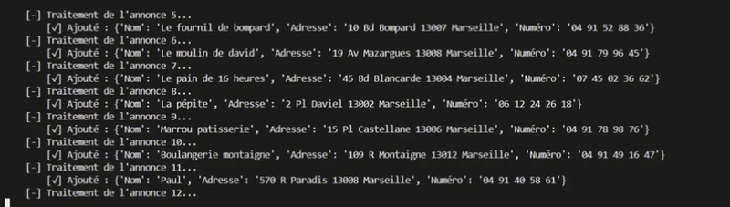
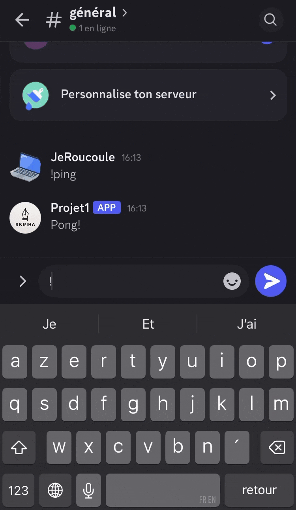

Je développe des scripts Python et des bots Telegram/Discord pour automatiser vos tâches et collecter vos données éfficacement.
Un bot qui répond aux commandes comme /meteo Paris avec la météo actuelle.
Scraping de sites d'annonces pour extraire les coordonées (nom,adresse, numéros) de plus 150 boulangeries à Marseille dans un fichier CSV.
Bot qui permet de connaitre son nom , son créateur et le nombre de serveurs sur lequel il est présent.
Email : moussa-codes@gmail.com